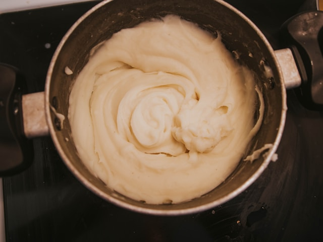

Description
This recipe is for creamy mashed potatoes that can be served along side steak or other hearty dishes and is simple
and easy to make
Ingredients
- Two lbs of Golden Potatoes
- Salt
- Pepper
- Heavy Cream
- Unsalted Butter
Steps
- Set a large saucepot of water onto the stove on high heat.
- Season the water with a generous helping of salt and pepper.
- Peel the potatoes and roughly dice into halfs then cubes and place them into a bowl.
- Once water has reached a boil, carefully pour the potatoes into the sauce pan. Be sure to pour the potatoes away from you to avoid splashing.
- After 20 to 25 minutes, check the potatoes with a fork. If the potatoes mash easily, turn off the burner and drain potatoes into a collander.
- Place potatoes back into the drained pot and pour a quarter cup of cream and 3 to 4 tablespoons of butter. Begin mashing until desired consistency and season to taste.
- Bonus: For extra smooth potatoes, use a hand mixer and whip potatoes until creamy